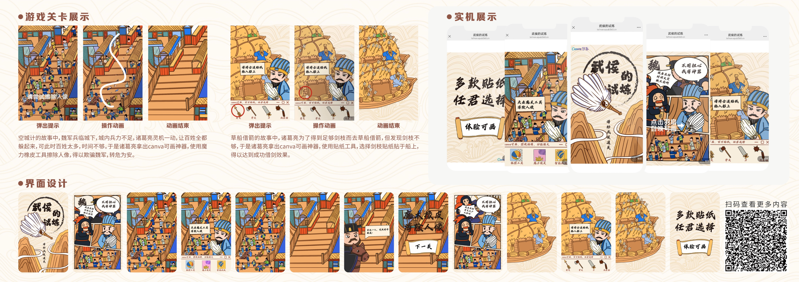
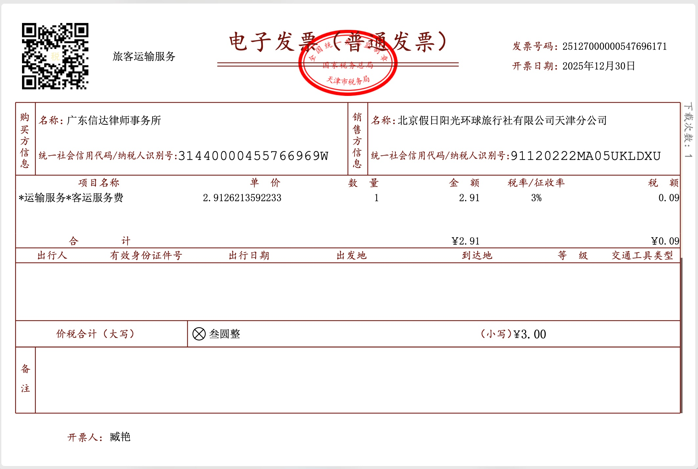
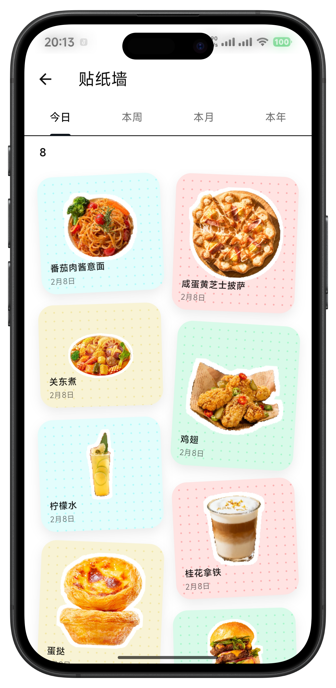
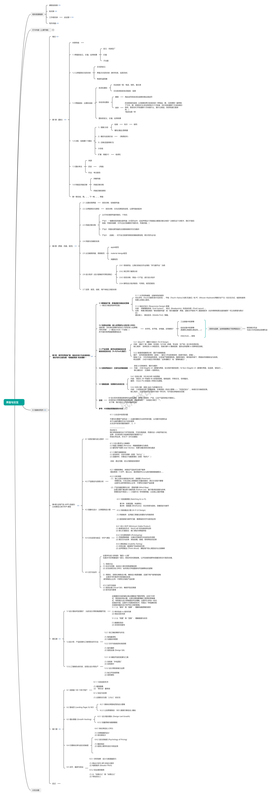

这次分享的重点
不是“我学了多少语法”，而是“我如何把每一个想法做成可用版本，并在真实反馈中持续迭代”。
WINTER BREAK / CREATIVE ENGINEERING LOG
我没有先把语法学完再开始，而是先做一个能交付的小作品， 再用项目倒逼能力升级。最终，代码开始服务我的创作、学习与管理系统。
PORTFOLIO MOTION
个人落地页（点击跳转）不是“我学了多少语法”，而是“我如何把每一个想法做成可用版本，并在真实反馈中持续迭代”。
起点

第一次把代码发布上线。核心价值不是“代码高级”，而是建立了 “做完就能被看到” 的正反馈。
2026-01-24 ~ 2026-01-25

上传、校验、预览、导出，全链路打通。重点是“可用流程”而不是“功能堆砌”。
2026-01-26 ~ 2026-01-27

开始真正以用户场景定义需求：拍照、语音、分类、检索，围绕“春节认亲”痛点组织功能。
2026-02-01 ~ 2026-02-22

寒假最完整项目：文案、交互、持久化、定位、包体、发布全链条持续优化。 能力提升关键不在一次做对，而在持续把版本做对。
2026-02-19 ~ 2026-02-22
开始做“决策工具”而非展示页。推荐要可解释，路径要连贯，移动端阅读要高效。
2026-02-21 ~ 2026-03-20

通过 Node + Sharp + Web 面板，实现从输入截图到样机输出的一键流程，进入工具化生产阶段。
2026-03

用脚本处理图表、文本与数据整理，让科研写作变得可追踪、可复现、可维护。
2026-03-12 ~ 2026-03-27

建立 SOP、口径统一、版本管理和质检机制，写作从“个人发挥”走向“团队可执行流程”。
2026-03-23 ~ 2026-03-26
Python 自动发邮件计划，把“计划制定-任务投递-执行提醒”串成系统闭环，编程开始反向管理生活。
不要等“全会了”才开始，先做一个最小可交付作品。
固定输出“问题-方案-结果”，成长速度会明显提升。
先跑通闭环，再做架构和性能升级。